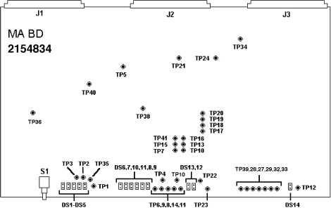

Operating Documentation
Direction 5114043-800, Rev# 9
LightSpeed 3.X Service Methods (Advanced)
Operating Documentation |
The 2154834 mA Board is managed by the Cathode mA. This change is required for compatibility with the Performix X-Ray Tube.
Illustration 1: 2154834, HEMRC mA Board

| DS1: (GRN) CLOOP | mA Loop is Closed |
| DS2: (GRN) INVEN | Inverter is Enabled |
| DS3: (RED) ANO | Anode OverCurrent Fault Detected in mA Monitoring |
| DS5: (RED) CAO | Cathode OverCurrent Fault Detected in mA Monitoring |
| DS6: (RED) FIL FLT | Filament Inverter Fault Detected (includes Inverter Fault Filament Undercurrent, Filament Overcurrent Open Filament and Shorted Filament) |
| DS7: (RED) INV FLT | Inverter Fault Detected |
| DS8: (RED) FIL UC | Filament Undercurrent Fault Detected |
| DS9: (RED) OFIL | Open Filament Fault Detected |
| DS10: (RED) SH FIL | Shorted Filament Fault Detected |
| DS11: (RED) FIL OC | Filament Overcurrent Fault Detected |
| DS12: (RED) IFLT | Filament Inverter Fault Detected (same as DS5 except on Inverter section of board) |
| DS13: (GRN) SMSP | Small Focal Spot is Selected |
| DS14: (GRN) INV ON | Inverter is On |
| TP1: +5 V | +5 V Reference Supply |
| TP2: SGND | Signal ground |
| TP3: FERR | Filament Error output from AR3, P7 (0.5 Volt/Amp) |
| TP4: CAMA | Cathode HV supply mA feedback (1 Volt/100mA) |
| TP5: FSIG | Filament Demand output from AR7, P1 (1 Volt/Amp) |
| TP6: LGND | Logic Ground |
| TP7: -10REF | -10 V Reference Supply |
| TP8: ACAL1 | Put an Ammeter between ACAL1 and CCAL2 as part of anode meter cals (200 mA scale) |
| TP9: CCAL1 | Put an Ammeter between CCAL1 and CCAL2 as part of cathode meter cals (200 mA scale) |
| TP10: ANMA | Anode HV supply mA feedback (1 Volt/100mA) |
| TP11: ACAL2 | Put an Ammeter between ACAL1 and ACAL2 as part of anode meter cals (200 mA scale) |
| TP12: FSHG | |
| TP13: MAFB | mA feedback into multiplying DAC U44, P17 |
| TP14: CCAL2 | Put an Ammeter between CCAL1 and CCAL2 as part of cathode meter cals (200 mA scale) |
| TP16: +24 V | +24 V Supply |
| TP20: FILSH | Filament Short Signal |
| TP21: +30 V | +30 V Reference Supply |
| TP22: FCMD | Filament Command output from AR12, P1 (1 Volt/Amp) |
| TP23: FCUR | Filament Feedback into PWM U67, P1 (1 Volt/Amp) |
| TP24: +15 V | +15 V Reference Supply |
| TP27: FIL CT | Filament Waveform into the Center Tap of the Filament Transformer |
| TP28: PD | Switching Interval Waveform from the PWM |
| TP29: FIL2 | Filament Inverter Q12 drain Voltage |
| TP31: FGND | GND Tied to End of Guard Band |
| TP32: FIL1 | Filament Inverter Q14 Drain Voltage |
| TP33: FSH | Filament Current - DC Level |
| TP35: +5LED | +5 V LED Chassis Supply |
| TP36: +5 V | +5 V Chassis Supply |
| TP37: -15V | -15 V Reference Supply |
| TP38: +15AV | +15 V Reference Supply |
| TP39: FD | Tie this Test Point high to disable fault generation |
| TP40: FDMD | Filament Demand |
| TP41: MAMUX | mA MUX Selection Output |
| TP42: FGND | GND Tied to End of Guard Band |
S1: RESET - Manual reset for the board